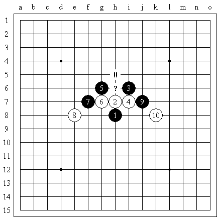

江南新绿《溪月》共738页全篇-爱五子棋独发
#1 江南新绿《溪月》共738页全篇-爱五子棋独发 作者：有志青年 发表时间：2008-8-8 7:05:44
引用：
想起学习连珠也有很多年了。在早些年的时候也买了不少书籍，总的来说还是看书比看电脑来的实在.看书不受电脑辐射影响，想看多久看多久，而且携带方便，想在哪里看就在哪里看。虽然说目前五子棋的市场很萧条,很多人宁可去买q币去刷分,也不愿意真正靠实力打一个名次,但不能说我们对五子棋的乐趣就因此而消退了.虽然说下棋的寿命平均不到两年,并不能说中国从此不再会有人下五子棋了.如果真有人想好好学一下五子连珠,那么这么溪月的确能算的上一本相当不错的书,至少作者没有简单抄抄就了事了.为了对溪月定式有个简单的了解,作者也是翻阅了网络上所有能翻阅的资料同时结合着自己的研究才写就此书.到2007年合适的时候,大家能够在网络上见到一个副产品,是我修订的五珠定式(由8000多手的lib格式网络棋谱修订而成).
点击下载
#2 Re:江南新绿《溪月》共738页全篇-爱五子棋独发 作者：疏星终结 发表时间：2008-8-8 8:50:48
有人说溪峡也都2打必胜了 ？真的么
？真的么
#3 Re:江南新绿《溪月》共738页全篇-爱五子棋独发 作者：紫菊 发表时间：2008-8-8 9:57:00
请问 DOC上面的棋盘是用什么软件弄上去的？
·
#4 Re:江南新绿《溪月》共738页全篇-爱五子棋独发 作者：江南新绿 发表时间：2008-8-8 10:12:16
是rena，最普遍的打谱软件之一。
如果您想转化图片大小，可以参考里面的宏，代码如下：
Sub 宏1()
For i = 1 To ActiveDocument.Shapes.Count
'ActiveDocument.Shapes(i).Select
ActiveDocument.Shapes(i).ConvertToInlineShape ’这里把所有的图形转化为可以嵌入型（比如把四周型等等转化过来，ActiveDocument.Shapes.Count好像不能一次调制成功，然后你根据数字，手工调整一下。）
Next
For j = 1 To ActiveDocument.InlineShapes.Count
ActiveDocument.InlineShapes(j).Select
'ActiveDocument.InlineShapes(j).Range.Paragraphs(1).Range.Select
ActiveDocument.InlineShapes(j).Height = 138.9
ActiveDocument.InlineShapes(j).Width = 138.9
Next
End Sub
ＰＳ： 貌似错误不多吧，不知道打谱打了这么多点之后，有没有打飞了的。
［本站用户 闫荣辉 于 2009-3-4 0:10:30 花5个金币送您鲜花一朵］
#5 Re:江南新绿《溪月》共738页全篇-爱五子棋独发 作者：gerbo 发表时间：2008-8-8 12:34:20
 下载不了，我知道怎么搞的，我用的超级旋风~~汗~~
下载不了，我知道怎么搞的，我用的超级旋风~~汗~~
#6 Re:江南新绿《溪月》共738页全篇-爱五子棋独发 作者：gerbo 发表时间：2008-8-8 12:37:58
 今天是北京奥运开幕第一天，祝福全中国，也希望我们的五子棋运动将来有一天也能进入奥运比赛项目。哈哈，有点玄了~
今天是北京奥运开幕第一天，祝福全中国，也希望我们的五子棋运动将来有一天也能进入奥运比赛项目。哈哈，有点玄了~
#7 Re:江南新绿《溪月》共738页全篇-爱五子棋独发 作者：gerbo 发表时间：2008-8-8 12:40:36
 尝试了这么久还是下不了，瀑布寒~~
尝试了这么久还是下不了，瀑布寒~~
#8 Re:江南新绿《溪月》共738页全篇-爱五子棋独发 作者：潇洒 发表时间：2008-8-8 13:02:48
我用迅雷可以下载#9 Re:江南新绿《溪月》共738页全篇-爱五子棋独发 作者：gerbo 发表时间：2008-8-8 13:20:45
 谢谢江南大哥~还有潇洒兄弟~我拿回去认真学习学习~~
谢谢江南大哥~还有潇洒兄弟~我拿回去认真学习学习~~
#10 Re:江南新绿《溪月》共738页全篇-爱五子棋独发 作者：nara 发表时间：2008-8-8 17:57:50
希望各位高手多发点精品啊
#11 Re:江南新绿《溪月》共738页全篇-爱五子棋独发 作者：刀刀 发表时间：2008-8-8 18:42:11
下了看了下,好东西哦~~非常清晰,非常好!~~ 支持!~#12 Re:江南新绿《溪月》共738页全篇-爱五子棋独发 作者：笨蛋020 发表时间：2008-8-8 19:11:11
以前不是说用来出书的 么
#13 Re:江南新绿《溪月》共738页全篇-爱五子棋独发 作者：gerbo 发表时间：2008-8-9 2:34:59
 点子书~我今天还在想如果可以在手机上看这些还有在手机上可以看LIB文件那该多好啊~
点子书~我今天还在想如果可以在手机上看这些还有在手机上可以看LIB文件那该多好啊~
我有一点不明白，溪月是不是完全等于狭月了？汗~~大家别见笑哈~~我还真的不知道哈~
#14 Re:江南新绿《溪月》共738页全篇-爱五子棋独发 作者：疏星终结 发表时间：2008-8-9 4:53:26
回14楼，和云雨一样，不完全一样，有盘端问题
#15 Re:Re:江南新绿《溪月》共738页全篇-爱五子棋独发 作者：江南新绿 发表时间：2008-8-9 8:57:43
引用：云雨月有盘端吗？溪峡月也是一样
原文由 疏星终结 发表于 2008-8-9 4:53:26 :回14楼，和云雨一样，不完全一样，有盘端问题
#16 Re:江南新绿《溪月》共738页全篇-爱五子棋独发 作者：自来自去 发表时间：2008-8-9 16:38:34
好东西要赞美的,收下拉!
#17 Re:江南新绿《溪月》共738页全篇-爱五子棋独发 作者：疏星终结 发表时间：2008-8-11 0:48:22
 我的意思是距变得格数不一样，没说清楚
我的意思是距变得格数不一样，没说清楚
#18 Re:江南新绿《溪月》共738页全篇-爱五子棋独发 作者：行云流水 发表时间：2008-8-11 11:06:51
祝贺江南新绿#19 Re:Re:江南新绿《溪月》共738页全篇-爱五子棋独发 作者：江南新绿 发表时间：2008-8-13 15:14:33
\
勘误！
#20 Re:江南新绿《溪月》共738页全篇-爱五子棋独发 作者：虚无 发表时间：2008-8-14 10:53:30
支持下，小南~~#21 Re:江南新绿《溪月》共738页全篇-爱五子棋独发 作者：lfzxdh 发表时间：2008-8-14 15:44:09
到2007年合适的时候,
这个很早就有啦?
#22 Re:江南新绿《溪月》共738页全篇-爱五子棋独发 作者：dream 发表时间：2008-8-22 1:13:35
看了十几天终于看完了，溪峡通型变化打点用J8，可解决书中最后提到的问题
=======上图对应的爱五子棋谱代码如下，以便你拆解：========
h8h9i10i9j8i8g9g10j7i7i6
======================================================
#23 Re:江南新绿《溪月》共738页全篇-爱五子棋独发 作者：gerbo 发表时间：2008-8-22 8:18:53
回2楼，溪月，狭月，两打必胜了~~同时感谢我的朋友发我谱~！在此不点名了，表示诚挚的感谢~！谢谢大家的帮助~
#24 Re:江南新绿《溪月》共738页全篇-爱五子棋独发 作者：浪人痴痴 发表时间：2008-8-28 21:45:22
支持下。江南老胸。好强悍哈1~！
#25 Re:江南新绿《溪月》共738页全篇-爱五子棋独发 作者：daiyue 发表时间：2008-8-29 15:17:56
甚好~感谢~
#26 Re:江南新绿《溪月》共738页全篇-爱五子棋独发 作者：雅匪 发表时间：2008-8-30 1:34:46
好
达则兼济天下
#27 Re:江南新绿《溪月》共738页全篇-爱五子棋独发 作者：清逸 发表时间：2008-9-7 12:53:42
再次收藏：）~~
#28 Re:江南新绿《溪月》共738页全篇-爱五子棋独发 作者：455 发表时间：2008-9-14 20:46:46
江南书出了吗
#29 Re:江南新绿《溪月》共738页全篇-爱五子棋独发 作者：455 发表时间：2008-9-14 21:10:24
看了以后 学习还多 加油
#30 Re:江南新绿《溪月》共738页全篇-爱五子棋独发 作者：无缘新手上路 发表时间：2008-9-20 14:36:07
我怎么看不到、
#31 Re:江南新绿《溪月》共738页全篇-爱五子棋独发 作者：无缘新手上路 发表时间：2008-9-20 14:45:46
我下载了怎么打开就显示什么图片塞选错误 哪个大大 可以帮我解决下 3Q#32 Re:江南新绿《溪月》共738页全篇-爱五子棋独发 作者：其怪 发表时间：2008-10-19 21:00:03
偶也下来看看#33 Re:江南新绿《溪月》共738页全篇-爱五子棋独发 作者：冷面孤煞 发表时间：2008-10-23 14:52:40
溪月2打是必胜#34 Re:江南新绿《溪月》共738页全篇-爱五子棋独发 作者：其怪 发表时间：2008-11-3 14:19:59
好东东啊，收藏了哦#35 Re:江南新绿《溪月》共738页全篇-爱五子棋独发 作者：松风竹月 发表时间：2008-11-18 9:20:34
多谢江南大大分享。738页，太强了，像我这样的常年潜水员也不得不冒出来#36 Re:江南新绿《溪月》共738页全篇-爱五子棋独发 作者：自来水 发表时间：2009-1-12 14:21:08
似乎有一路帮残月通的一打变化没有呃……
=======上图对应的爱五子棋谱代码如下，以便你拆解：========
h8h9g10g8i10
======================================================
另外一个通疏星的真的很复杂……不过还是很不错～顶一记
#37 Re:江南新绿《溪月》共738页全篇-爱五子棋独发 作者：叶灏 发表时间：2009-1-18 6:47:06
多谢分享!!#38 Re:江南新绿《溪月》共738页全篇-爱五子棋独发 作者：闫荣辉 发表时间：2009-3-4 0:11:55
送江南新绿老师一个花花，我最近还正看您的这个呢！谢谢！#39 Re:江南新绿《溪月》共738页全篇-爱五子棋独发 作者：起航 发表时间：2009-8-15 18:02:20
呵呵，下载回去看了，十分感谢楼主。